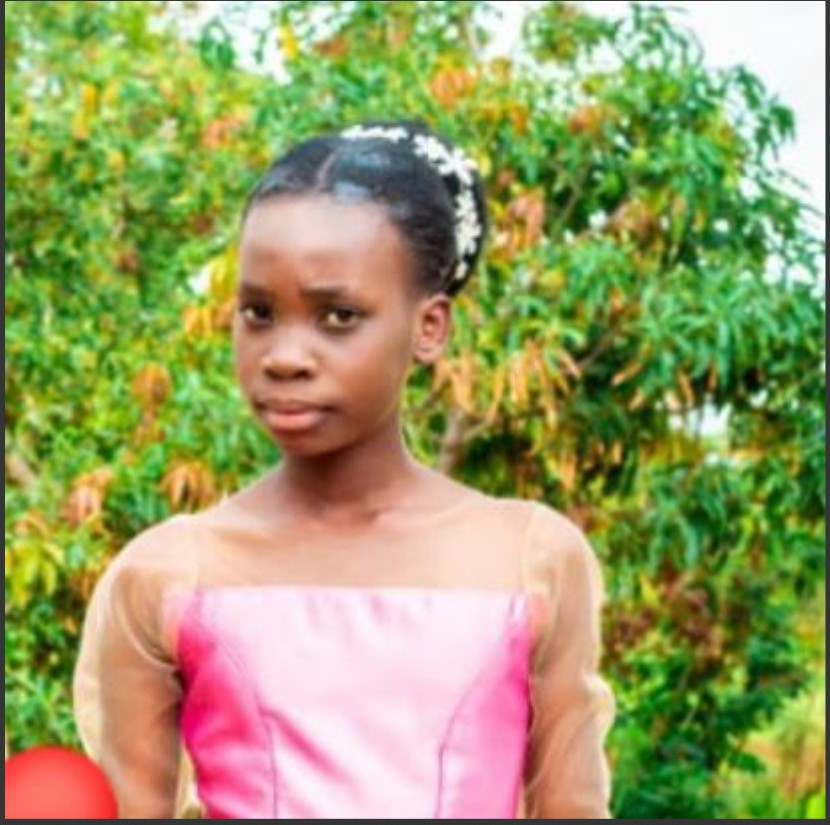

Karibu katika website maalum kwa ajili ya familia ya masanula ambapo hapa ni ambapo familia yetu itakuwa inajiunganisha na ulimwengu katika mamb mbalimbali ambayo sisi kama familia
tumeona kwamba yana manufaa kuyashare pamoja na jamii na wapendanao wengine wote katika nyakati na matukio tofauti,, Lengo ni kuonesha upendo ambao kwa kweli huanzia katika ngazi ya familia na kisha jamii
tunakushukuru kwa kutumia muda wako kutembelea tovuti hii na Mungu akubariki sana..
About Us
familia ya masanula ni familia ambayo mpaka sasa ni ya Baba na watoto watatu ambapo Baba wa familia hii anaitwa Huzuni Masanula pia mama wa familia ni Melinda mhanga.
Ni furaha iliyoje kwani ni familia kubwa na yeye upendo kuanzia ndani mpaka kwa watu wote wanaoizunguka ambapo ndugu mbalimbali wa pande zote mbili wamekuwa mashahidi wa hili kwa msaada na undugu walioupata kutoka kwetu kwa nyakati tofauti tofauti.
Baadhi yao hivi sasa ni watumishi sehem mablimbali kwa ajira mbalimbali hii ni kuonesha upendo na si majivuno kwa kuwapa elimu ambayo ni msingi wa maisha.
kama Familia tunajivunia sana kuwa sehem ya msaada kwa watu wengi ni fahari kwetu...
Latest Posts
kerry aendelea na masomo mwaka wa pili
Tunamshukuru Mungu kwani Kerry ambaye ni mwanafunzi wa chuo kikuu cha dodoma (UDOM) ambaye anachukua shahada ya sayansi ya computer and ulinzi wa mitandao amefanikiwa kujiunga na chuo na kuendelea na masomo ya mwaka wa pili
ni matumaini atafanya vizuri chuoni.
Christina aendelea na masomo kujiandaa na mtihani wa taifa kidato cha pili mwakani
Tunamshukuru Mungu kwani pia dada wa familia christina anaendelea kufanya vizuri katika masomo yake shule ya sekondari caglieri na hivi sasa anajiandaa vizuri ili kufanya vizuri mitihani yake ya kidato cha pili mwakani.
ni matumaini yetu kwa uweza wa Mungu atafanya vizuri na kuendelea na elimu ya sekondari kwa matokeo mazuri.
Mama tinah afanya vizuri ufugaji kuku wa kisasa
Tunamshukuru Mungu kwani pia Mama wa familia hivi karibuni alianza ufugaji wa kuku wa kisasa kwa mara ya kwanza na kuna mafanikio makubwa yanaonekana kwani idadi kubwa ya vitoto,, ni matumaini yetu vitoto vitakua na kufikia malengo ili kuendelea
vizuri na ufugaji huo.
KIPAIMARA
pia moja kati ya matukio ya kukumbukwa ni lile la Mwaka 2024 ambapo Mungu alibariki familia yetu na kumuwezesha christina na kerry kupata kipaimara kwa pamoja jambo
ambalo lilisimamiwa kwa karibu na wazazi na tunamshukuru sana Mungu kwa hilo...
christina akibarikiwa katika kipaimara
kerry akibarikiwa katika kipaimara
hivi ndivyo ilivyokuwa na tunamshukuru sana MUNGU kwa kutubarikia kipaimara
Picha za Familia
Baba na Mama
Hawa ni mama na baba ambao wameilea familia yetu kwa upendo, hekima, na bidii. Tunawapenda sana ❤️. Hawa ndo msingi wa familia yetu kwani wameilea familia katika misingi ya heshima na maarifa na elimu nasi
tumeyashika hayo kwa moyo wote.
Kaka
Huyu ni kaka tunayemtazamia, mwenye moyo wa upendo na mfano bora kwa familia yetu üëè. kaka yetu amekuwa mfano mwema katika misingi ya familia yetu ya heshima , maarifa na elimu.
nasi tunamtazamia kama mwanga wa namna gani ya kuwa na hekima katika kufikia malengo.
Kerry
Kerry ni mtoto wa pili katika familia hii yenye watoto watatu. Kerry naye pia amekuwa katika misingi ya maarifa na heshima ili aweze kutimiza malengo yake katika maisha kwa ujumla.
Christina

Huyu ni Dada tunayemtazama na tunayempenda ambaye amekuwa kiashiria cha upendo kwa kaka zake na familia kwa ujumla ,, anyefanya vizuri darasani kwani amekuwa na heshima na maarifa. üëè